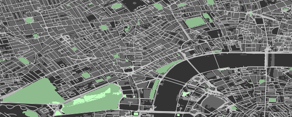
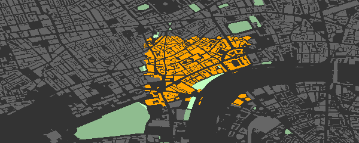
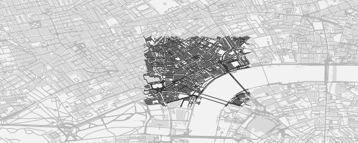
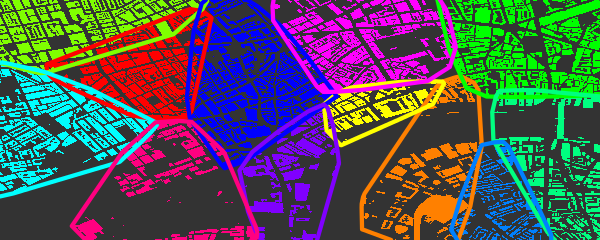
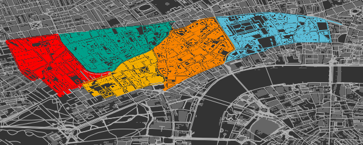
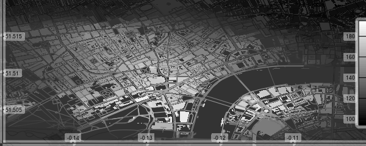

R package to produce visually impressive customisable images of OpenStreetMap (OSM) data downloaded internally from the overpass api. The above map was produced directly from osmplotr with no further modification. This README briefly demonstrates the following functionality:
4. Highlighting Selected Areas
6. Highlighting Areas Bounded by Named Highways
1. Quick Introduction
But first the easy steps to map making:
-
Specify the bounding box for the desired region
-
Download the desired data—in this case, all building perimeters.
dat_B <- extract_osm_objects (key = "building", bbox = bbox) -
Initiate an
osm_basemapwith desired background (bg) colourmap <- osm_basemap (bbox = bbox, bg = "gray20") -
Overlay objects on plot in the desired colour.
map <- add_osm_objects (map, dat_B, col = "gray40") -
Print the map to graphics device of choice
print_osm_map (map)
2. Installation
First install the package
install.packages ("osmplotr")or the development version
devtools::install_github ("ropensci/osmplotr")And then load it in the usual way
3. A Simple Map
Simple maps can be made by overlaying different kinds of OSM data in different colours:
dat_H <- extract_osm_objects (key = "highway", bbox = bbox)
dat_P <- extract_osm_objects (key = "park", bbox = bbox)
dat_G <- extract_osm_objects (key = "landuse", value = "grass", bbox = bbox)
map <- osm_basemap (bbox = bbox, bg = "gray20")
map <- add_osm_objects (map, dat_B, col = "gray40")
map <- add_osm_objects (map, dat_H, col = "gray80")
map <- add_osm_objects (map, dat_P, col = "darkseagreen")
map <- add_osm_objects (map, dat_G, col = "darkseagreen1")
print_osm_map (map)
4. Highlighting Selected Areas
osmplotr is primarily intended as a data visualisation tool, particularly through enabling selected regions to be highlighted. Regions can be defined according to simple point boundaries:
pts <- sp::SpatialPoints (cbind (c (-0.115, -0.13, -0.13, -0.115),
c (51.505, 51.505, 51.515, 51.515)))OSM objects within the defined regions can then be highlighted with different colour schemes. cols defines colours for each group (with only one here), while bg defines the colour of the remaining, background area.
map <- osm_basemap (bbox = bbox, bg = "gray20")
map <- add_osm_groups (map, dat_B, groups = pts, cols = "orange", bg = "gray40")
map <- add_osm_objects (map, london$dat_P, col = "darkseagreen1")
map <- add_osm_groups (map, london$dat_P, groups = pts, cols = "darkseagreen1",
bg = "darkseagreen", boundary = 0)
print_osm_map (map)
Note the border = 0 argument on the last call divides the park polygons precisely along the border. The same map highlighted in dark-on-light:
map <- osm_basemap (bbox = bbox, bg = "gray95")
map <- add_osm_groups (map, dat_B, groups = pts, cols = "gray40", bg = "gray85")
map <- add_osm_groups (map, dat_H, groups = pts, cols = "gray20", bg = "gray70")
print_osm_map (map)
5. Highlighting Clusters
add_osm_groups also enables plotting an entire region as a group of spatially distinct clusters of defined colours. Groups can be defined by simple spatial points denoting their centres:
set.seed (2)
ngroups <- 12
x <- bbox [1, 1] + runif (ngroups) * diff (bbox [1, ])
y <- bbox [2, 1] + runif (ngroups) * diff (bbox [2, ])
groups <- cbind (x, y)
groups <- apply (groups, 1, function (i)
sp::SpatialPoints (matrix (i, nrow = 1, ncol = 2)))Calling add_osm_groups with no bg argument forces all points lying outside those defined groups to be allocated to the nearest groups, and thus produces an inclusive grouping extending across an entire region.
map <- osm_basemap (bbox = bbox, bg = "gray20")
map <- add_osm_groups (map, dat_B, groups = groups,
cols = rainbow (length (groups)), border_width = 2)
print_osm_map (map)
6. Highlighting Areas Bounded by Named Highways
An alternative way of defining highlighted groups is by naming the highways encircling desired regions.
# These highways extend beyond the previous, smaller bbox
bbox_big <- get_bbox (c(-0.15, 51.5, -0.10, 51.52))
highways <- c ("Davies.St", "Berkeley.Sq", "Berkeley.St", "Piccadilly",
"Regent.St", "Oxford.St")
highways1 <- connect_highways (highways = highways, bbox = bbox_big)
highways <- c ("Regent.St", "Oxford.St", "Shaftesbury")
highways2 <- connect_highways (highways = highways, bbox = bbox_big)
highways <- c ("Piccadilly", "Shaftesbury.Ave", "Charing.Cross.R",
"Saint.Martin", "Trafalgar.Sq", "Cockspur.St",
"Pall.Mall", "St.James")
highways3 <- connect_highways (highways = highways, bbox = bbox_big)
highways <- c ("Charing.Cross", "Duncannon.St", "Strand", "Aldwych",
"Kingsway", "High.Holborn", "Shaftesbury.Ave")
highways4 <- connect_highways (highways = highways, bbox = bbox_big)
highways <- c ("Kingsway", "Holborn", "Farringdon.St", "Strand",
"Fleet.St", "Aldwych")
highways5 <- connect_highways (highways = highways, bbox = bbox_big)
groups <- list (highways1, highways2, highways3, highways4, highways5)And then passing these lists of groups returned by connect_highways to add_osm_groups, this time with some Wes Anderson flair.
map <- osm_basemap (bbox = bbox, bg = "gray20")
library (wesanderson)
cols <- wes_palette ("Darjeeling", 5)
map <- add_osm_groups (map, dat_B, groups = groups, boundary = 1,
cols = cols, bg = "gray40", colmat = FALSE)
map <- add_osm_groups (map, dat_H, groups = groups, boundary = 0,
cols = cols, bg = "gray70", colmat = FALSE)
print_osm_map (map)
7. Data Surfaces
Finally, osmplotr contains a function add_osm_surface that spatially interpolates a given set of spatial data points and colours OSM objects according to a specified colour gradient. This is illustrated here with the volcano data projected onto the bbox.
x <- seq (bbox [1, 1], bbox [1, 2], length.out = dim (volcano)[1])
y <- seq (bbox [2, 1], bbox [2, 2], length.out = dim (volcano)[2])
xy <- cbind (rep (x, dim (volcano) [2]), rep (y, each = dim (volcano) [1]))
z <- as.numeric (volcano)
dat <- data.frame (x = xy [, 1], y = xy [, 2], z = z)
map <- osm_basemap (bbox = bbox, bg = "gray20")
cols <- gray (0:50 / 50)
map <- add_osm_surface (map, dat_B, dat = dat, cols = cols)
# Darken cols by ~20%
map <- add_osm_surface (map, dat_H, dat = dat,
cols = adjust_colours (cols, -0.2))
map <- add_colourbar (map, cols = cols, zlims = range (volcano))
map <- add_axes (map)
print_osm_map (map)
8. Gallery
Got a nice osmplotr map? Please contribute in one of the following ways:
Fork repo, add link to
README.md/.Rmd, and send pull request; orOpen issue with details; or
Send email to address in
DESCRIPTION.
See package vignettes (basic maps and data maps) for a lot more detail and further capabilities of osmplotr. Please note that this project is released with a Contributor Code of Conduct. By participating in this project you agree to abide by its terms.